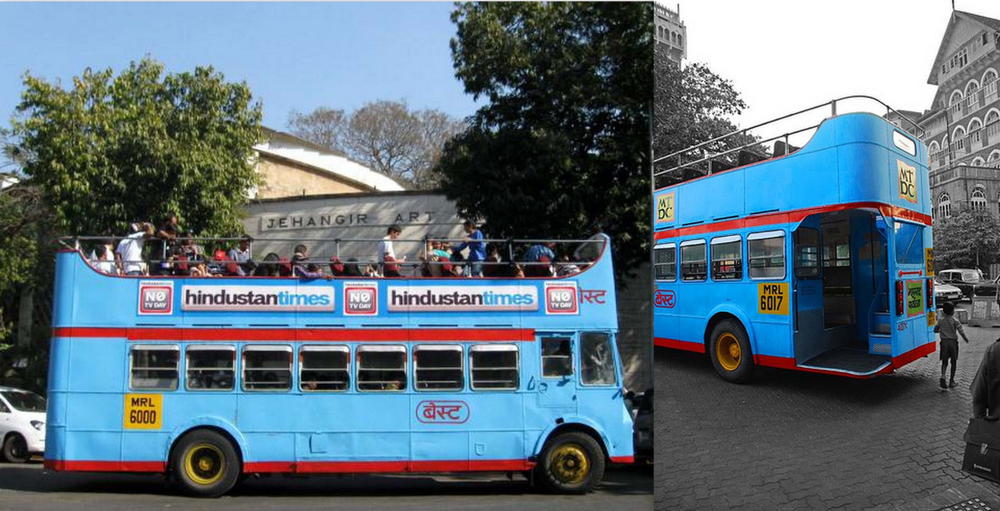
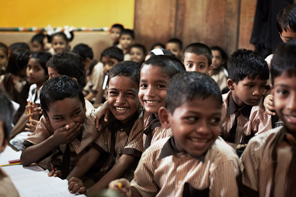

OUR ETHOS
We want to give our guests a deeper, fuller understanding of Mumbai and Bangalore through our day tours. When we design a tour, we aim to combine the city's must-see sights with hidden gems that surprise even lifelong Mumbaikars .Our main office resides in Dharavi.
For example, our Bus Tour uses an unexpected form of Mumbai transport to introduce guests to iconic South Mumbai sights like the Gateway of India and CST Station as well as some lesser known places that are difficult to discover on your own such as Sassoon Dock and Bombay Panjrapole (cow sanctuary). Our goal is to help you get closer, understand better, and experience more.Various buses are arranges in order to provide a comfortable travel which the customers can choose according to their preference.We also provide classic double-decker buses for people who want to travel in an open atmosphere.The rates and the timings for those who wish will be displayed after registering successfully in Trendy Travels.
Equally important to us is supporting the local communities where we work. We use 40% of our profits, about 30% of our revenue, to support local development projects in Dharavi, one of Asia's largest slums and the centre of small scale industry in Mumbai. With the profits from the tour and the on-going support of our guests, we have been able to provide high-quality education and extracurricular activities to over 6,000 residents of Dharavi through our partnership with an NGO
What are you waiting for? Check out our One Day Tours.